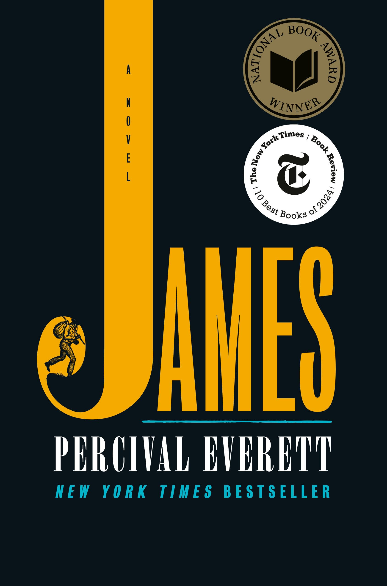
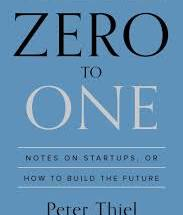
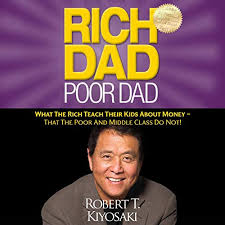
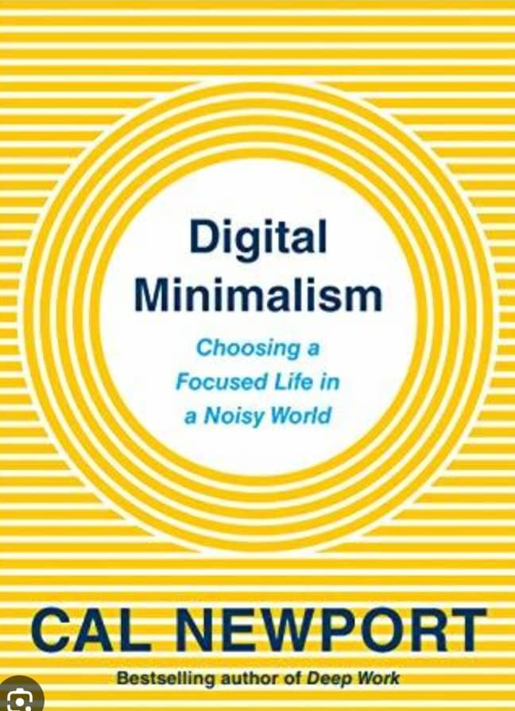
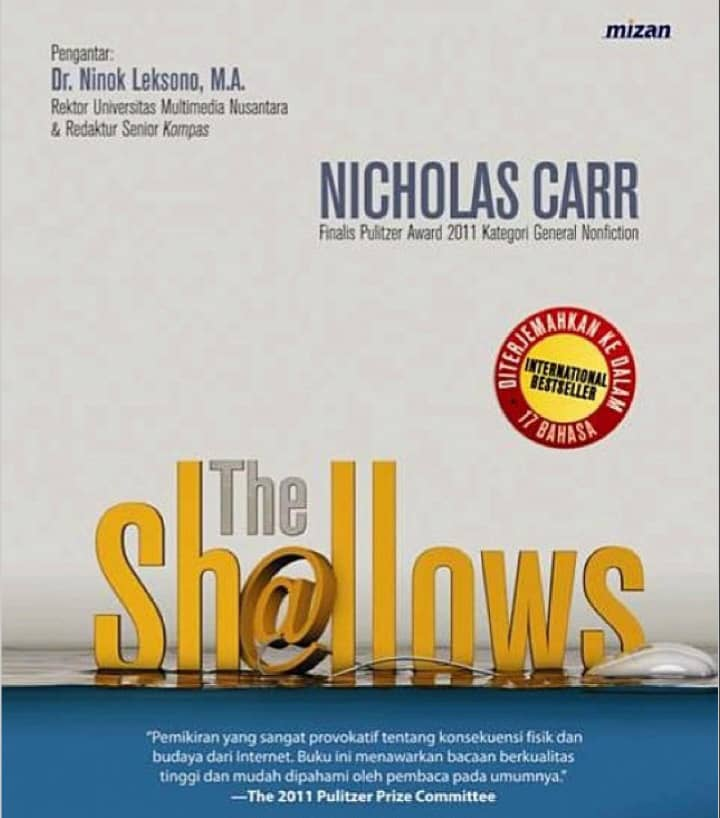

| James |
Percival Everett |
$17.86 |
This is a powerful reimagining of The Adventures of Huckleberry Finn, told from the perspective of Jim, an enslaved man seeking freedom. The novel explores race, identity, and American history with humor and depth. It won the Pulitzer Prize for Fiction in 2025. |
 |
| Karla’s Choice |
Nick Harkaway |
$27.00 |
Set in 1963 during the Cold War, this gripping spy novel brings back the legendary character George Smiley. The story delves into espionage, betrayal, and political intrigue, while introducing a compelling female protagonist. Written by the son of John le Carré, it honors and expands the legacy of the original series. |
 |
| Sapiens |
Yuval Noah Harari |
$16.49 |
This thought-provoking book explores the history of human beings from the emergence of Homo sapiens in the Stone Age to the modern era. Harari blends history, science, and philosophy to explain how humans evolved to dominate the planet. The book examines key developments in human history, such as the Cognitive Revolution, the Agricultural Revolution, and the rise of capitalism, technology, and religion. It's insightful, engaging, and challenges many conventional ideas about history and society. |
 |
| The Night Circus |
Erin Morgenstern |
$16.99 |
A beautifully written fantasy novel set around a magical competition between two young illusionists, Celia and Marco, who are bound by a mysterious challenge. The competition takes place within the enchanting Le Cirque des Rêves, a circus that only operates at night. As the two fall in love, they must navigate a world of secrets, magic, and fate. Morgenstern’s lush prose and rich imagination create a dreamlike reading experience that blends romance, mystery, and fantasy. |
 |
| Zero to one |
Peter Thie |
$15 |
The book is a bold guide to building innovative startups. |
 |
| Rich Dad, Poor Dade |
Robert Kiyosaki |
$15.2 |
The book teaches the mindset and principles of building wealth through investing, financial education, and entrepreneurship. |
 |
| Digital Minimalism |
Cal Newport |
$16.99 |
Cal emphasises the need for a philosophy of technology use that aligns persona goals and values rather than succumbing to societal pressures |
 |
| The Shallows |
Nicholas Carr |
$15.99 |
Carr explores how Internet influences our cognitive abilities particularly our attention span and deep thinking capacity . He argues that constant availability of information and rapidityof online interactions can lead to superficial thinking |
 |